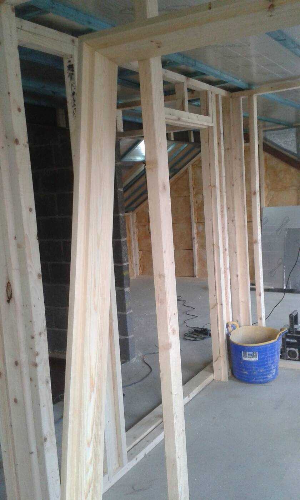

Ward Green Loft Conversion
TypeLoft Conversion
Photos14
AreaBarnsley & South Yorkshire

About the project
Construction of large Dormer/Loft Conversion comprising of 3 x new Bedrooms

Construction of large Dormer/Loft Conversion comprising of 3 x new Bedrooms